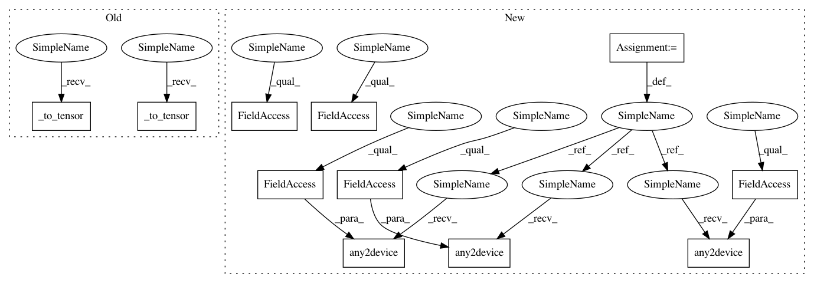

f2a7ac7952dfd93abdfdb3a2e1dbed96066ab191,catalyst/rl/onpolicy/algorithms/ppo.py,PPO,train,#PPO#Any#,83
Before Change
batch["value"], batch["advantage"], batch["action_logprob"]
states = self._to_tensor(states)
actions = self._to_tensor(actions)
returns = self._to_tensor(returns)
old_values = self._to_tensor(values)
advantages = self._to_tensor(advantages)
old_logprobs = self._to_tensor(action_logprobs)
After Change
batch["state"], batch["action"], batch["return"], \
batch["value"], batch["advantage"], batch["action_logprob"]
states = utils.any2device(states, device=self._device)
actions = utils.any2device(actions, device=self._device)
returns = utils.any2device(returns, device=self._device)
old_values = utils.any2device(values, device=self._device)
advantages = utils.any2device(advantages, device=self._device)
old_logprobs = utils.any2device(action_logprobs, device=self._device)
// critic loss
values = self.critic(states).squeeze(-1)
In pattern: SUPERPATTERN
Frequency: 4
Non-data size: 11
Instances
Project Name: catalyst-team/catalyst
Commit Name: f2a7ac7952dfd93abdfdb3a2e1dbed96066ab191
Time: 2019-06-25
Author: scitator@gmail.com
File Name: catalyst/rl/onpolicy/algorithms/ppo.py
Class Name: PPO
Method Name: train
Project Name: Scitator/catalyst
Commit Name: f2a7ac7952dfd93abdfdb3a2e1dbed96066ab191
Time: 2019-06-25
Author: scitator@gmail.com
File Name: catalyst/rl/offpolicy/algorithms/actor_critic.py
Class Name: OffpolicyActorCritic
Method Name: train
Project Name: catalyst-team/catalyst
Commit Name: f2a7ac7952dfd93abdfdb3a2e1dbed96066ab191
Time: 2019-06-25
Author: scitator@gmail.com
File Name: catalyst/rl/onpolicy/algorithms/ppo.py
Class Name: PPO
Method Name: train